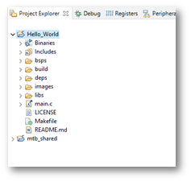

EBV-IoT - Infineon & Avnet IoTConnect Secure Cloud connected solution -
Training manual
Task 1: PSoC programming and debugging – Hello world
Important: ModusToolbox™ has to be installed prior running the task. Please refer to sub-section Installing ModusToolbox™. |
Overview
In this task we will create a simple “Hello world” project to get familiar with the toolchain.
ModusToolbox Overview
ModusToolbox™ Software is a modern, extensible development environment supporting a wide range of Infineon microcontroller devices, including PSoC™ Arm® Cortex® Microcontrollers, TRAVEO™ T2G Arm® Cortex® Microcontroller, XMC™ Industrial Microcontrollers, AIROC™ Wi-Fi devices, AIROC™ Bluetooth® devices, and USB-C Power Delivery Microcontrollers.
Step by step guide
 |
To Do: The task does not involve any software development. Instead, it is only required to process the steps in the right order and to understand their underlying effects. |
|---|
HW setup
In this task we will actually use only PSoC Pioneer Kit, but we recommend using complete stack of boards as will be required in later tasks.
For convenience, stack the Arduino compatible shields in the following order from bottom to top:
- The PSoC™ 62S2 Wi-Fi BT Pioneer Kit (CY8CKIT-062S2-43012) – at the bottom
- EBV-IoT – Infineon PAS CO2 Evaluation Shield
- EBV-IoT – Infineon OPTIGA Trust M Evaluation Shield
- 128x128 pixels OLED display (optional)

Then only plug your laptop to the PSoC Kit USB programming interface as shown below:
Launch Eclipse IDE for ModusToolbox
To launch the Eclipse IDE start Eclipse IDE for ModusToolbox 3.1 from Windows start menu under “ModusToolbox 3.1 (Current user)”

Important: It is very important to keep your Workspace and Project names as short as possible. Otherwise, the complete path length may become too long and compilation of some later project may not succeed. |
At “Select a directory as workspace” prompt you can either (select one option from the list bellow)
- browse for your existing workspace directory clicking Browse,
- create new directory by clicking Browse and then inside the File explorer right click and go for New→Folder, name the folder, select newly created folder, and click Select Folder,
- Type in any valid path for your workspace and the tool will create it at Launch if missing,
- or search among recent workspaces listed when clicking Recent workspaces.
Select Workspace Directory and click Launch
Create a project
When creating a new workspace or if no project were previously added to the workspace, you will see an empty workspace as shown below. Click the New Application link in the Eclipse IDE “Quick Panel”.
Alternatively, you can use File→New→ModusToolbox™ Application or press “CTRL+7”.
These commands launch the “Project Creator” tool with Board Support Package (BSP) selection, which displays a list of boards, showing the Kit Name, MCU, and Connectivity Device (if applicable). As you select each of the kits shown, the description for that kit displays on the right. Depending on the settings for your system, you may see different categories, including PSoC™ 4, PSoC™ 6, and AIROC™ Bluetooth® BSPs. For this example, select the CY8CKIT-062S2-43012 kit and click Next.
Next, “Select application” window is opened listing various applications available for the selected kit. As you select an application, a description displays on the right. You can select multiple applications for the selected BSP by enabling the check box next to the applicable applications. In the Project Creator - Select Application dialog, choose the example by enabling the checkbox. Go to “Getting Started” and select check box next to the "Hello World" application. Optionally, you can change the suggested New Application Name. Click Create to complete the application creation process.
When you select a supported kit, the example is reconfigured automatically to work with the kit. To work with a different supported kit later, use the Library Manager to choose the BSP for the supported kit. You can use the Library Manager to select or update the BSP and firmware libraries used in this application. To access the Library Manager, click the link from the Quick Panel.
You can also just start the application creation process again and select a different kit.
If you want to use the application for a kit not listed here, you may need to update the source files. If the kit does not have the required resources, the application may not work.
 |
Note: For more details about using this tool, refer to the ModusToolbox™ Project Creator user guide. |
|---|
After several moments, the application opens with the Hello_World in the “Project Explorer”, and the README.md file opens in the file viewer.
 |
Tip: It is convenient to have line numbers shown in the IDE. Please go for Window→Preferences now search for “number” or go for General→Editors→Text Editors and check “Show line numbers” and click Apply and Close. |
|---|
IDE overview
The IDE is based on the Eclipse IDE. It uses several plugins, including the Eclipse C/C++ Development Tools (CDT) plugin. For more information about Eclipse, refer to the Eclipse Workbench User Guide. We also provide a document called the Eclipse IDE survival guide, which provides tips and hints for how to use the Eclipse IDE.
The IDE contains Eclipse standard menus and toolbars, plus various panes such as the Project Explorer, Code Editor, and Console. One difference from the standard Eclipse IDE is the "ModusToolbox™ Perspective". This perspective provides the "Quick Panel", and adds tabs to the Project Explorer. "Perspective" is an Eclipse term for the initial set and layout of views in the IDE.
|
Tip: If you switch to a different perspective, you can restore the ModusToolbox™ Perspective by clicking the ModusToolbox™ icon button in the upper-right corner. You can also select Perspective→Open Perspective from the Window menu. To restore the ModusToolbox™ Perspective to the original layout, select Perspective→Reset Perspective from the Window menu. |
|---|
The following describe different parts of the IDE:
- Menus and toolbars – Use the various menus and toolbars to access build/program/debug commands for your Many of these are covered in the Eclipse Workbench User Guide.
- Project Explorer – Use the Project Explorer to find and open files in your See Project Explorer for more information.
- Quick Panel – Use this tab to access appropriate commands, based on what you select in the Project Explorer. More in Quick Panel sub-section.
- Code Editor–UsetheCodeEditortoeditvarioussourcefilesinyour
- Console–Usethesetoolstoreviewmessagesandaccesstheintegrated
Project Explorer
In the Eclipse IDE, after creating an application, the Project Explorer contains one or more related project folders. The following images show our “Hello_world” PSoC™ MCU application.
Both PSoC™ MCU application and an AIROC™ Bluetooth® application types of applications contain a similar project structure. Each contains the main application source code, and a Makefile. Note that PSoC™ MCU applications contain a libs directory, while AIROC™ Bluetooth® applications have a wiced_btsdk project with shared SDK, BSPs, and libraries for all applications in a workspace.
Quick Panel
As stated previously, the “Quick Panel” is part of the "ModusToolbox™ Perspective”. It provides quick access to commands and documentation based on what you have selected in the “Project Explorer”.
The Quick Panel contains links to various commands and documentation, organized as follows:
- Start – This contains the New Application link to create new applications, and links to find Code Examples, Libraries, BSPs, and training material.
- Selected <app-name> project – This contains different project-related links based on the project that is selected in the Project Explorer, as well as the type of Links here include: Build and Clean the application.
- Launches – This contains various Launch Configurations, based on the selected application project and device, which can be used to program the device and launch the This area is only populated if you have the top project in your application selected (<app-name>).
- Tools – This contains links to the various tools available for the selected For more information.
- Documentation – This may contain several documents in HTML format, which are included as part of the chosen BSP.
Program application
After loading an application, build it to generate the necessary files. Select a project. Then, in the Quick Panel, click the Build Application link. The following images show the Quick Panel for a typical PSoC™ MCU application.
It may take some time to compile, but it only takes so much time for the first compile or after “Clean Application” execution. In the Console you can follow messages flow until receiving something like:
14:08:31 Build Finished. 0 errors, 0 warnings. (took 53s.74ms)
Build application
In the Project Explorer, select the desired project. Then, in the Quick Panel, click the Hello_World Program (KitProg3_MiniProg4) link for a PSoC™ MCU application.
In the Console you should be seeing some messages including “Erasing” and “Programming” progress bar and the orange LED on the PSoC Pioneer Kit blinking.
Accessing the device through serial terminal
The “Hello_world” application also sends some data to serial communication interface we can read using any serial communication terminal. Please use device manager to get your device serial port number information like the one depicted bellow:
Use your favorite serial communication terminal for serial communication monitoring. We use TeraTerm or you can use ModusToolbox integrated serial communication terminal. Use following settings:
- Port number: as retrieved from “Device manager”
- Speed: 115200
- Data: 8 bit
- Parity: none
- Stop bits: 1
- Flow control: none
For the “Hello_World” example you should be seeing messages as follows (reset board if needed):
| Terminal – COM14 File Edit Setup Control Window Help |
|---|
|
****************** HAL: Hello World! Example ****************** Hello World!!! For more projects, visit our code examples repositories: https://github.com/Infineon/Code-Examples-for-ModusToolbox-Software Press 'Enter' key to pause or resume blinking the user LED LED blinking paused |
Debug application
One of the most advanced features of the toolchain is definitely step-by-step debugging. In the Project Explorer, select the desired project. Then, in the Quick Panel, click the Hello_World Debug (KitProg3_MiniProg4) link for a PSoC™ MCU application
The process is very similar to “Build” process: in the Console you should be seeing some messages including “Erasing” and “Programming” progress bar, but now your application execution will halt at “main” function entrance.
Now you could do step by step code execution or eventually run it as in the “Program” example. Please use icons in the “Toolbar” menu or check “Run” for all the options. Eventually you can use following shortcuts:
- F8 – Run or Resume
- F5 – Step Into
- F6 – Step Over
- CTRL + F2 – Terminate
- CTRL + R – Run to Line
|
Tip: The shortcuts above are very handy, especially if you use debugging for longer period of time. |
|---|
|
Note: You may noticed the perspective changed to “Debug” perspective which is more convenient for application debugging. You can change perspective using Window→Perspective→Open Perspective→Other and use any other perspective or switch to ModusToolbox (default) perspective. You can also select perspective from the Toolbar at the far right hand side using icon . |
|---|
 |
Task accomplished: Congratulations, you have just run your first ModusToolbox application and learn step-by-step debugging. |
|---|